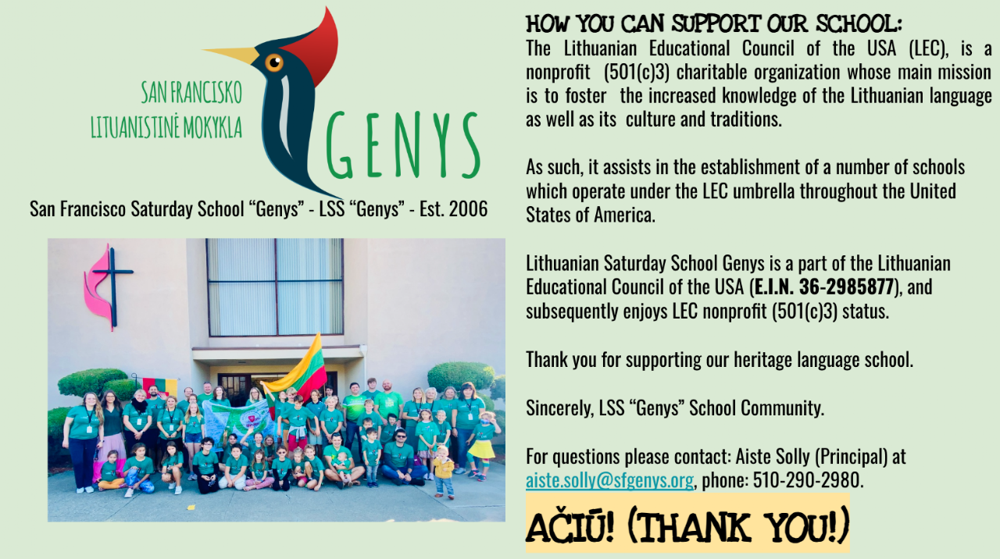
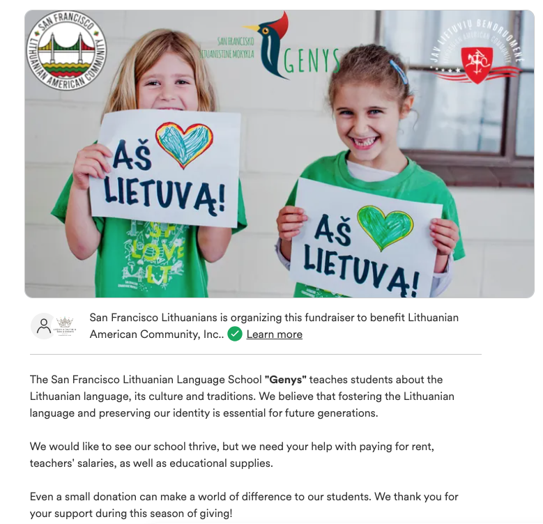
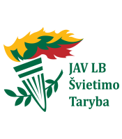
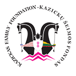
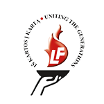
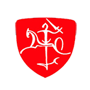
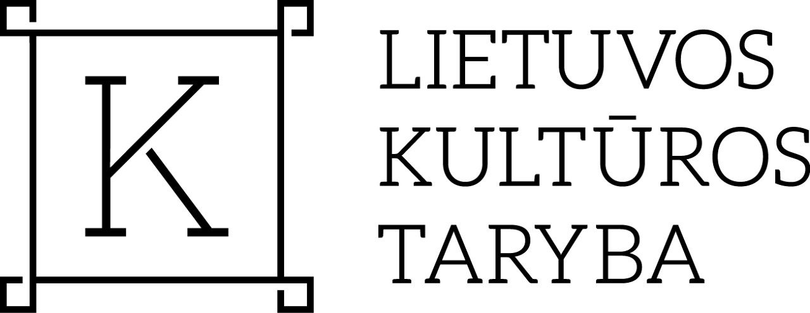
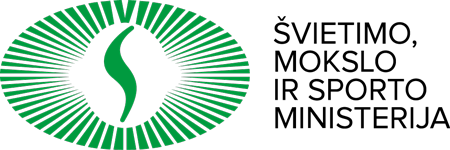
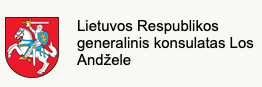

PARTNERIAMS
Parama mokyklai
Mūsų kampanija „Finansuokime mokinį“
2026–2027 m. metinė paramos kampanija
Padėkite mums ugdyti nuostabius lietuvių–anglų dvikalbius vaikus ir jaunimą nuo 3 iki 14 metų.

San Francisko lituanistinė mokykla „Genys“ yra JAV Lietuvių švietimo tarybos dalis (EIN 36-2985877), todėl naudojasi tarybos ne pelno organizacijos (501(c)(3)) statusu.
Kaip galite paremti
- Zelle: aiste.solly@sfgenys.org – labiausiai pageidaujamas būdas; parama tiesiogiai pasiekia mūsų „Bank of America“ sąskaitą.
- GoFundMe: https://gofund.me/41ccc1c1
- PayPal: sfgenys@gmail.com – mažiausiai pageidaujamas būdas dėl 10 % mokesčio net ir ne pelno organizacijoms.
Klausimais kreipkitės į mokyklos vadovę Aistę Solly: aiste.solly@sfgenys.org, tel. 510-290-2980.
Tapkite rėmėju →PARTNERS
Support our school
Our Fund a Learner Campaign
2026–2027 Annual Giving Campaign
Help us foster our amazing Lithuanian-English bilingual children and youth – ages 3–14.
Lithuanian Saturday School Genys is a part of the Lithuanian Educational Council of the USA (EIN 36-2985877), and subsequently enjoys LEC nonprofit (501(c)(3)) status.
Ways to donate
- Zelle: aiste.solly@sfgenys.org – most preferred method; donations go directly to our Bank of America account.
- GoFundMe: https://gofund.me/41ccc1c1
- PayPal: sfgenys@gmail.com – least preferred option due to a 10% fee even for nonprofits.
For questions, please contact Aiste Solly (Principal) at aiste.solly@sfgenys.org, phone 510-290-2980.
Become a supporter →
Mūsų rėmėjai ir partneriai
ESAME LABAI DĖKINGI, KAD MUS PALAIKOTE!
ESAME LABAI DĖKINGI, KAD MUS PALAIKOTE! – atverti šaltinio vaizdą




ESAME LABAI DĖKINGI, KAD MUS PALAIKOTE! – atverti šaltinio vaizdą
ESAME LABAI DĖKINGI, KAD MUS PALAIKOTE! – atverti šaltinio vaizdą


